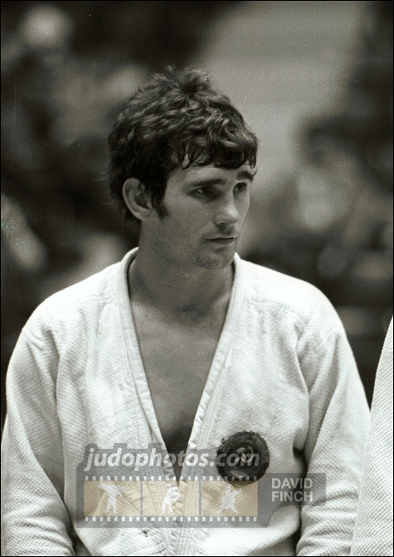

Abdulmanap Nurmagomedov, vandaag een van de beroemdste en meest gewilde coaches in Rusland.
hij heeft al een groot aantal titeljagers grootgebracht, waarvan de slimste zijn eigen zoon Khabib Nurmagomedov is, de ongeslagen Russische UFC vechter.
Tijdens zijn jeugd begon khabib met worstelen onder begeleiding van zijn vader, Abdoelmanap Noermagomedov.
Zijn vader heeft een zwarte band in judo, is voormalig nationaal kampioen van Oekraïne in sambo.
verder is hij een meester in de sport van de USSR in freestyle worstelen. Hij heeft de titel van geëerde coach van Rusland.
Abdulmanap begon zijn sportcarrière met worstelen in vrije stijl in Oekraïne. hij heeft ook gediend in het leger.

Abdulmanap trainde met bekende trainers, zoals Peter Butriy, geëerde coach van de USSR, hij vocht ook in het nationale team van Vladimir Nevzorov.
hij was triomfantelijk op de Olympische Spelen van 1976 in judo in Montreal.